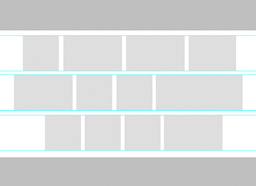
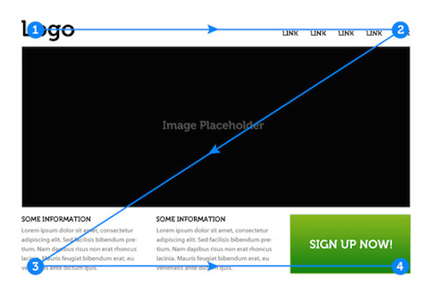
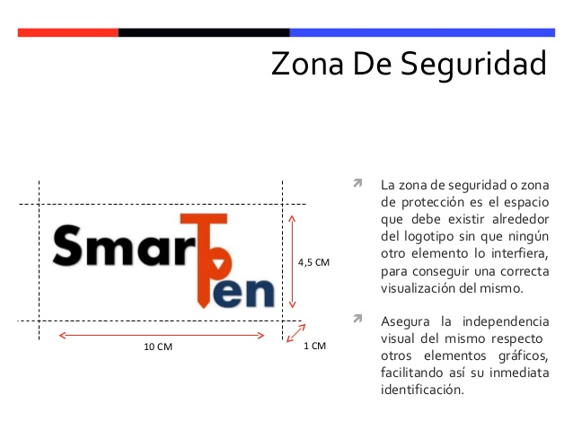
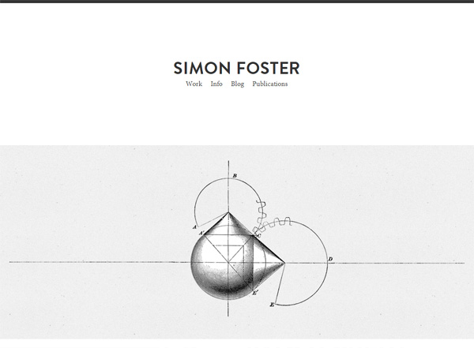

22
marzo
2017
Retícula
La retícula es una estructura o maqueta que permite distribuir elementos visuales, manteniendo una relación. Es esencial cuando se quiere tener una consistencia en el formato de los diseños.
Proporción aurea

La proporción áurea está presente en la naturaleza, es una relación matemática obtenida de la sucesion de fibonnacci, transladada esta proporcion a un rectángulo cualquiera, se obtienen puntos de interés que el espectador visualizara, es usa para la composición fotográfica y como retícula.
Movimiento
Movimiento es realizar una acción en el tiempo, una imagen que transmite la sensación del movimiento se dice que tiene dinamismo. Esta da la sugerencia de movimiento.
Jerarquía
Estructura de elementos visuales que definen un orden de importancia. Elementos organizados en base a un criterio. Dependiendo de lo que se desea comunicar, ciertos elementos pueden tener más o menor importancia en la imagen, esta jerarquía se puede lograr mediante tamaño, contraste, color, proximidad, composición, etc.
Responsive design
El diseño web adaptable es una metodología de diseño y desarrollo su objetivo es adaptar la apariencia de las páginas web al dispositivo, sin importar su aspect ratio.
Constantes / Variables
Una constante en el diseño es aquel elemento que no puede ser modificado de su estado natural, por ejemplo, la zona de seguridad de un logotipo, o la posición de un eslogan respecto a otro elemento. Las variables son aquellos elementos que pueden ser modificados en caso de ser requerido, por ejemplo, la tipografía en una página web, si un navegador no puede resolver una dependencia, se puede definir una tipografía alterna.
Economía Visual
Utilizar únicamente la cantidad necesaria de elementos visuales, interfaz de usuario limpias y sin distracciones, menús y botones ocultos al usuario, visibles únicamente cuando el cursor se acerca a una zona.
Tipografía
Familias tipográficas

Peso
Tracking
Abandonado
Imágen
Color
Psicología
Recorrido Visual
Puntos de Armonía
Contraste
Equilibrio
Planos
Fondo - Figura
Textura
Estilo
Síntesis
Concepto
Intencionalidad
Composición
Concentración